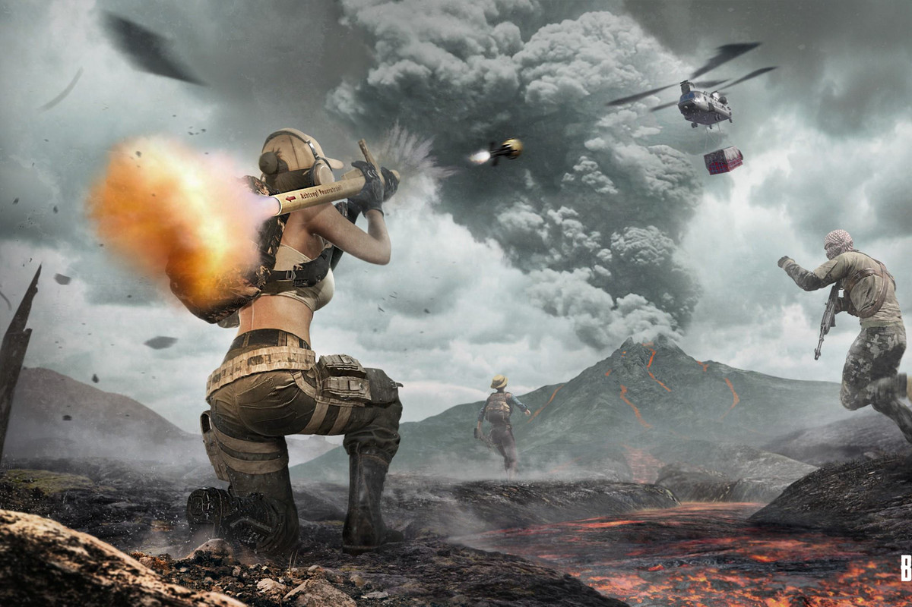
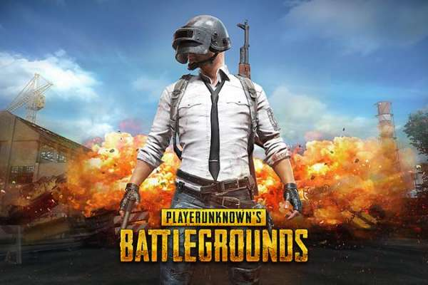

|  PlayerUnknown’s Battlegrounds is gearing up for a new season, and this time around, that means a new map that will change every match. The game’s new map is called Paramo, and it’s set in the highlands of South America. The map is 3x3km making it one of the game’s smallest maps — even smaller than the 4x4 Sanhok. Paramo will have the same kinds of landmarks and cities that players are used to in PUBG maps, but here they’ll change locations every match. Even the terrain itself will move around from game to game so players will constantly have to be thinking about how they get from one part of the map to another. To complicate things further, Paramo is near an active volcano which will spit out lava flows that crisscross the map, cutting certain areas off — or at least make them very dangerous to reach. |  The blue zone is also a little different in Paramo because it will kill players much faster than on other maps. Thankfully, there’s a new item called the Critical Response Kit that will revive players in one second if they’re down in a tight spot. Unfortunately, there are some trade-offs involved in using a map that’s always changing. For one thing, Paramo can only be played in third-person. The PUBG community remains split on whether it’s better to play in third-person or first-person, and the removal of the first-person option on this map has already proven controversial among some players. Paramo and the rest of the PUBG season 9 changes are currently on the PUBG Test Server. The new map and new season will remain on the test server for a couple of weeks before they’re brought to the live game |